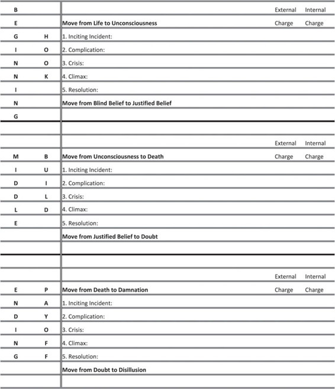

Human beings live in two worlds, the external and the internal, on the public stage and inside ourselves. We pursue external objects of desire like a new job or a spouse or if we’re in law enforcement, we seek to bring criminals to justice. But we also have internal objects of desire, like respect or redemption or belonging to something bigger than ourselves. But the deepest internal object of desire, the one we admire most in our fellow human beings and in ourselves, is to seek truth.
And truth is defined as a search for those unknowable answers to two questions:
Who am I?
Why am I here?
It is within the Internal Content Genres that we find the pursuit of answers to these ultimately unknowable questions.
The best stories, the ones that we fall head over heels in love with, are those that contend with finding deep internal truth.
Thomas Harris decided, whether consciously or subconsciously matters little, that the way to outdo Red Dragon was to put as much emphasis on his Internal Content Genre in The Silence of the Lambs as he does his External Content Genre.
Remember that the external Story of life is on the surface.
And two kinds of outside forces drive external events. Harris knew that he had the personal outside forces of the serial killer Buffalo Bill and the extra-personal outside forces of the FBI Behavioral Science Unit to drive his external Story for The Silence of the Lambs. His lead protagonist’s external Story would move backward or forward according to her moment-to-moment success pursuing her conscious object of desire, her “want.”
What’s wonderful about Harris’ choice of protagonist (beyond the fact that he wisely chose to feature a woman trying to make it in a man’s world) is that he does not give her the obvious “want” of most serial killer stories. We don’t meet a seasoned/hardened detective faced with a seemingly impossible task. Well, we do, but he’s the secondary character Jack Crawford.
Instead of making the charismatic Crawford his lead, Harris introduces us to a version of ourselves, a newbie trainee with a lot of ambition and “on the surface” qualities that seem to be easy to exploit. She’s smart, but more importantly, she has the physical qualities that will attract the attentions of Hannibal Lecter. Clarice Starling’s “want” at the beginning of the Story is a reflection of her internal need to find the truth. Just as every one of our deep-seated wants is to find truth.
At the beginning of the novel, Clarice Starling just wants to become an FBI Agent under Behavioral Science head Jack Crawford.
But when she discovers the errand that Crawford sends her on could help solve the Buffalo Bill case, her want then escalates to contribute to cracking the case itself. She now wants to play a big role in catching the serial killer du jour.
That change in want, driven by events arising from conflict, moves the external Story forward. She’s now “wanting” something else and we as readers are pulled with her as she chases it. We want it for her too. What this “on the surface” drive sets up is an internal journey too. We the readers might not know the specific internal reasons why it is so important for her to be an FBI agent, but Harris does.
And Harris masterfully takes us deeper and deeper into Starling as a human being. She doesn’t know it (and we don’t know it either really), but her want to become an FBI Agent has turned into a need to find truth…about the world she inhabits and the truth about herself.
She wants to find the surface truth of the identity of Buffalo Bill, but she also needs to learn the truth of the institution that is tasked with finding him (the FBI Behavioral Sciences Unit) in order to be ultimately successful in her career. Crawford is retiring soon. What will it take for her to get his job someday? Learning the truth about the institution brings up yet another need…to find out the truth of why she needs to be a part of it so badly.
Remember that we look to Story to instruct us how to navigate the world. While we the readers get sucked into the External Genre, Thomas Harris is also telling an underlying Internal Content Genre Story. The “A” Story is the serial killer thriller and the “B” Story is the internal content Story all about Starling, an empathetic stand-in for the reader.
We don’t live in one world. We live in two.
The external world (how we live among our fellow man pursuing what we want) and the internal world (how we find peace within ourselves by getting what we need) are the hemispheres of human experience.
Let’s get back to Thomas Harris’ foolscap and look at how he answered the crucial Internal Content Genre and the value at stake progression:
Internal Genre:
Internal Value at Stake:
Again, Harris knew that he was going to write a sequel to Red Dragon and that it would be a serial killer thriller that had life as its central global value at stake. I also suspect that he knew that he wanted his lead character to “win” the external challenge—to find the killer. That is, he wanted his protagonist to smite the dragon, to get what she wants externally. He may have toyed with the idea of Buffalo Bill getting away or even killing Clarice Starling and using a part of her body to perfect his woman suit, but I doubt that notion got very far. Having a schizophrenic flayer of women come out on top just doesn’t jibe with even the most cynical views of contemporary society. The world is a mess, but it’s not so chaotic that you can’t walk down the street without the threat of death. At least that’s true within the confines of western society’s reading public…those people who would actually engage and buy Harris’ book.
So if the External Genre ends up as a “win,” a positive success, the killer is brought to justice and the protagonist survives, what “B” Story could Harris tell that doesn’t end with roses and sunshine?
Remember that one of the reasons we find Story so compelling is that it provides both sides of life in the telling…the positive and the negative. So if the External Genre ends in positive, the Internal Genre should end in the negative. The combination plate of win/lose produces irony. If the writer invests in a deep Internal Content Genre as his “B” Story and chooses to have it succeed or fail in the same way as his External Content Genre, the Story won’t work. It will ring untrue. Readers will come away disappointed, even though they don’t know exactly why.
The thriller often uses a secondary tragic love Story to counterbalance the positive of getting the criminal. That is, the protagonist falls in love, but then loses the love after the killer discovers the attachment. The villain then kills the protagonist’s love interest or his buddy salvation partner etc. The lead character wins by bringing the antagonist to justice, but loses by losing her love.
We’ve seen this twist a million times. It’s not that you can’t use love Story to accomplish this goal if you set out to write a thriller, but you’re going to have a hell of a time making it fresh and surprising. We’re so used to this subplot that most readers will be so far ahead of the Storytelling that they’ll abandon the book very early on in the read. They know it’s only a matter of time before the bad guy kills the hero’s lover/partner/friend.
Harris uses love Story as subplot in The Silence of the Lambs, but he uses it as tertiary comic relief more than dramatic revelation—i.e. the nerd at the Smithsonian’s flirtation with Clarice Starling. Harris also uses the father/daughter mentor/apprentice love relationship masterfully too, but serious romantic love is not a driving force in the book.
Instead of trying to reinvent the wheel with Starling falling in love as his “B” Story, Harris decided to use his journalist’s training to comment on a social institution. He has Starling learn the hard way about the realities of the FBI, bureaucracy, politics, sexism etc. The way he chose to dramatize this education, while also adding deep layers of characterization to his lead character, is to choose the Disillusionment Plot as his Internal Content Genre.
Remember that the disillusionment plot is a movement from a positive belief in the order of the universe, basic fairness etc. (positive) to a darker point of view, one that recognizes the murkiness of life, the real injustice and mendacity that plagues us all. To have no illusions is to understand that a person must have powerful political connections to move up in a large organization. Working one’s fingers to the bone is all well and good, but getting to “the top” requires alliances and careful manipulations.
The disillusioned come to the conclusion that there is no treasure at the end of the hard-work rainbow, because there really isn’t any rainbow to begin with. What we think we want and how we think we can get there is never what it really turns out to be. To become a pivotal high-ranking FBI agent has as much to do with who your friends are as it does with how hard you work or how talented an agent you are. Harris chose to have Starling learn this needed dark lesson while she pursues her external wants—finding Buffalo Bill.
The value at stake in the Disillusionment plot is the lead character’s worldview. What Germans call Weltanschauung. I love the German word because, for me, it sounds visceral, in the guts. Generally, the progression of negativity of the Weltanschauung value moves from ILLUSION to CONFUSION to DISILLUSION to the negation of the negation DYSTHYMIA (a chronic state of negative/ depression).
But for The Silence of the Lambs, I define the progression as a movement from the negative state of naïve positivity of BLIND BELIEF (assuming something without empirical proof) to the positive state of JUSTIFIED BELIEF (coming to trust based on evidence) back to the negative with the rise of DOUBT (counter evidence arising disproving previous data) and culminating in deep negative of DISILLUSION.
For Clarice Starling, her disillusionment plot manifests itself through her illusions about the meritocracy of the FBI. She begins the Story from a positive yet dangerous state of BLIND BELIEF in the power figures and the FBI institution as a whole. At the beginning, she’s being played by Jack Crawford to do his dirty work (using her as bait for Hannibal Lecter to help Crawford crack a case) but because she is so blinded by her ambition and ego, she doesn’t question Crawford’s motives. She wants to believe that Crawford sees something in her, some quality above and beyond her test scores and beauty that leads her to this great opportunity.
After he pulls her in, Crawford then actively manipulates Starling into seeing the FBI as a righteous institution. He rewards her with more authority and respect as she proves herself capable. He confuses her and her confusion/unconsciousness leads her to JUSTIFIED BELIEF that the FBI really is a meritocracy. Harris has Starling transition from BLIND BELIEF to JUSTIFIED BELIEF just as he moves the external value from LIFE to UNCONSCIOUSNESS at the end of the Beginning Hook of the novel.
Later when the FBI and Crawford come under extreme stress after the kidnapping of a senator’s daughter though, the real truth about the institution begins to reveal itself to Starling. Her illusions about her place in the world begin to shatter. By the novel’s end, she is forced to directly oppose the FBI in order to get what she wants (Buffalo Bill) which also saves her from spiritual damnation.
After all of the machinations within and outside the FBI, at the end of the novel Starling is DISILLUSIONED.
She has a negative worldview. She understands that there are no rules at the FBI beyond self-preservation. She is not at the end of the line in terms of the disillusion value (catatonic depression or Dysthymia), but her worldview has dramatically changed from the beginning of the novel to the end.
While the external content value ends at positive, the life value has been restored (although it is not at the level that it was at the beginning of the novel), the internal value ends at negative. I’ll do a much deeper dive into this dual progression and how the two values arc in relation to one another chapter by chapter later on when we build our final Story Grid.
So here is how we’ll fill in our Foolscap for the Internal Genre:
Internal Genre: Worldview Disillusionment
Internal Value at Stake: Blind Belief to Justified Belief to Doubt to Disillusionment
And let’s add in the Internal Value Progression alongside the external value progression on the rest of our page:
